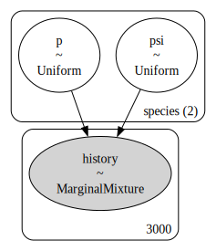

# libraries
import numpy as np
import pandas as pd
import pymc as pm
import arviz as az
import matplotlib.pyplot as plt
# hyperparameters
SEED = 808
RNG = np.random.default_rng(SEED)
DRAW_COUNT = 1000
M = 1500Closed capture-recapture
Closed population capture-recapture models using data augmentation
In this notebook, I explore fitting closed population capture-recapture models in PyMC. Capture-recapture, at least the Lincoln-Peterson estimator, has been around for almost 100 years. Since then, countless varieties of capture-recapture models have been developed for closed populations (Otis et al. 1978).
The basic steps in capture-recapture are: capture several individuals–e.g., via trapping–from the population of interest, mark these animals, then release them. We repeat this process several times, each time noting when we recapture individuals.
| Individual | \(t_1\) | \(t_2\) | \(t_3\) | \(t_4\) |
|---|---|---|---|---|
| 001 | 1 | 1 | 0 | 1 |
| 002 | 0 | 1 | 1 | 1 |
| 003 | 0 | 0 | 1 | 1 |
This produces a capture history for each individual, which allows us to estimate the probability of capture and the number of individuals in the population \(N\).
Model \(M_0\)
I explore fitting the simplest closed capture-recapture model, Model \(M_0,\) through parameter-expanded data-autmentation (PX-DA, Royle and Dorazio 2008). The idea with PX-DA is to augment the capture histories with \(M-n\) all zero capture-histories, where \(M\) is a hyperparameter that should be much greater than the true population size \(N,\) and \(n\) is the total number of individuals that were captured during the study. This allows us to treat the data as a zero-inflated binomial distribution (see below).
def augment_history(history):
'''Augment a capture history with all-zero histories.'''
animals_captured, T = history.shape
# create M - n all zero histories
zero_history_count = M - animals_captured
zero_history = np.zeros((zero_history_count, T))
# tack those on to the capture history
augmented = np.row_stack((history, zero_history))
return augmented To demonstrate this approach, I use the salamander dataset from Bailey, Simons, and Pollock (2004), as demonstrated in Hooten and Hefley (2019), Chapter 24. These data were collected on two salamander species, the red-cheeked salamander (Plethodon jordani) and the pygmy salamander (Desmognathus wrighti), in Great Smoky Mountains National Park. The salamanders were counted in 15m by 15m square plots. In this case, we augment the history by setting \(M=1500\) (see above). There were \(n=92\) individual red-cheeked and \(n=132\) pygmy salamanders captured during the course of the survey.
def get_history():
'''Read, augment, and recombine the salamander histories.'''
# read in salamander data
sal_data = pd.read_csv('sal_data.csv')
# labels for capture history columns
col_labs = [f'y{t}' for t in range(1, 5)]
# subset each dataset before augmenting
is_red = sal_data.spp == 0
red = sal_data.loc[is_red, col_labs].to_numpy()
is_pyg = sal_data.spp == 1
pyg = sal_data.loc[is_pyg, col_labs].to_numpy()
# augment each set separately since they differ in length
red_augmented = augment_history(red)
pyg_augmented = augment_history(pyg)
# recombine into one history
history = np.concatenate((red_augmented, pyg_augmented))
return history
history = get_history()
_, T = history.shape
# summarize into binomial data
history_summarized = history.sum(axis=1)For this model, I use the pm.ZeroInflatedBinomial class, just as I did in the occupancy notebook. That said, the parameters here are different. First, \(p\) represents the probability of capturing a given individual during the survey. Second, \(\psi\) represents a mysterious entity known as the inclusion probability. That is, the probability that an individual from the hyportheitical superpopulation \(M\) is included in the popualation of interest \(N.\) Then, we can estimate the population size as \(\hat{N}=M\hat{\psi},\) or generate posterior draws of \(N,\) e.g., \(N^{(s)} \sim \text{Bin}(M,\psi^{(s)})\)
In this example, I combine the two species into one pm.Model object, making use of coords. That said, the parameters for each species are treated as independent.
# index for each species
species_idx = np.repeat([0, 1], M)
# coordinates identifying parameter each species
coords = {'species': ['red_cheeked', 'pygmy']}
with pm.Model(coords=coords) as M0:
# priors for the capture and inclusion probabilities
psi = pm.Uniform('psi', 0, 1, dims='species')
p = pm.Uniform('p', 0, 1, dims='species')
# likelihood for the summarized data
pm.ZeroInflatedBinomial(
'history',
p=p[species_idx],
psi=psi[species_idx],
n=T,
observed=history_summarized
)
pm.model_to_graphviz(M0)
with M0:
M0_idata = pm.sample(DRAW_COUNT)Auto-assigning NUTS sampler...
Initializing NUTS using jitter+adapt_diag...
Multiprocess sampling (4 chains in 4 jobs)
NUTS: [psi, p]
Sampling 4 chains for 1_000 tune and 1_000 draw iterations (4_000 + 4_000 draws total) took 20 seconds.
100.00% [8000/8000 00:19<00:00 Sampling 4 chains, 0 divergences]
az.plot_trace(M0_idata);
Of course, these plots lack our true parameter of interest: the population size \(N.\) We can treat this as a derived quantity, using \(M\) and the posterior distribuion of \(\psi\) to generate a posterior for \(N.\) Arviz has handy tools for calculating posteriors of derived quantities, which I demonstrate below.
# this does not make a copy of the posterior
post = M0_idata.posterior
# simulate draws of N using the posterior of psi
N_samples = RNG.binomial(M, post.psi)
# add our draws back to the idata object,
# specifying the dimensions of our array (species, chain, draw)
post['N'] = (post.dims, N_samples)Now we can look at the traceplots, this time excluding \(\psi\) and looking at \(N.\) I also added the estimates from Hooten and Hefley (2019), Chapter 24, although they used a different prior for \(\psi.\)
N_hooten = [229.6, 450.9]
az.plot_trace(M0_idata, var_names=['p', 'N'], combined=True,
lines=[("N", {}, [N_hooten])]);
We might expect estimates of capture probability \(p\) and the abundance \(N,\) by way of the inclusion probability \(\psi,\) to be somewhat correlated. We can explore this relationship visually by plotting the posterior draws. For a more custom look to the plots, I plot the draws using matplotlib
# stack the draws for each chain, creating a (n_draws, n_species) array
p_samps = np.vstack(post.p.to_numpy())
N_samps = np.vstack(post.N.to_numpy())
# create the plot
fig, ax = plt.subplots(1, 1, figsize=(4, 4))
# add the scatter for each species
labs = ['Red-backed','Pygmy']
ax.scatter(p_samps[:,0], N_samps[:,0], s=5, alpha=0.05, label=labs[0])
ax.scatter(p_samps[:,1], N_samps[:,1], s=5, alpha=0.05, label=labs[1])
# this removes the opacity for the dots in the legend
leg = ax.legend()
for lh in leg.legend_handles:
lh.set_alpha(1)
# update aesthetics
ax.spines.right.set_visible(False)
ax.spines.top.set_visible(False)
ax.set_ylabel(r'$N$')
ax.set_xlabel(r'$p$')
ax.set_title('Posterior draws')
plt.show()
References
Bailey, Larissa L, Theodore R Simons, and Kenneth H Pollock. 2004. “Estimating Detection Probability Parameters for Plethodon Salamanders Using the Robust Capture-Recapture Design.” The Journal of Wildlife Management 68 (1): 1–13.
Hooten, Mevin B, and Trevor Hefley. 2019. Bringing Bayesian Models to Life. CRC Press.
Otis, David L, Kenneth P Burnham, Gary C White, and David R Anderson. 1978. “Statistical Inference from Capture Data on Closed Animal Populations.” Wildlife Monographs, no. 62: 3–135.
Royle, J Andrew, and Robert M Dorazio. 2008. Hierarchical Modeling and Inference in Ecology: The Analysis of Data from Populations, Metapopulations and Communities. Elsevier.